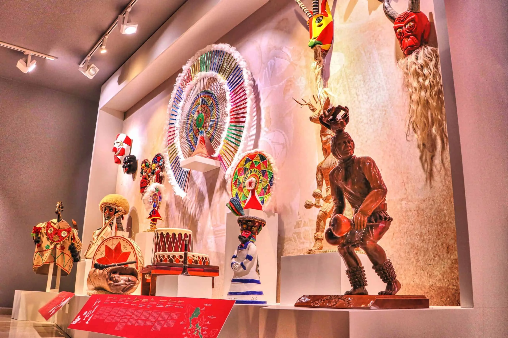

<!DOCTYPE html>
<html lang="es">
<html>
   
        <head>
    <TITLE>WEBSITE CECYMAGIC Alex_rz</TITLE>
    <link rel="icon" href="Logowebsite.jpeg" type="image/jpeg">
  </head>
</html>

<head>
    <meta charset="UTF-8">
    <meta name="viewport" content="width=device-width, initial-scale=1.0">
    <title>WEBSITE CECyMagic </title>
    <link href="https://cdn.jsdelivr.net/npm/bootstrap@5.3.3/dist/css/bootstrap.min.css" rel="stylesheet">

    <style>
    .card-img-top{
        height: 700px;
        object-fit: cover;
    }
     .card{
        height: 100%;
     }

   h1{
      color: rgb(99, 45, 25);
      font-family:cursive;
   }

    p{
      color: rgb(117, 9, 9);
      text-align:justify;
      font-family: Cambria, Cochin, Georgia, Times, 'Times New Roman', serif;
   }
   

    </style> 
</head>
 
<body>
        <div class="container text-center my-5">
        <h1>MUSEO DE ARTE </h1>
        <h4 style="color: rgba(21, 87, 18, 0.641);">¡
           Valle de Bravo !</h4>
        </div>

        <div class="container my-5">
        <div class="row g-4">

        <div class="col-md-6">
        <div class="card h-100 shadow">
          
           
        <div class="card-body text-center">
            <h5 class="card-title">
             VIDEO </h5>
            <a href="https://vt.tiktok.com/ZSpC4G6Hy/">VER VIIDEO</a>


          <video controls>
            <source src="video4.mp4" type="video/mp4">
          </video>

        </div>
        </div>
        </div>
     
        

        <div class="col-md-6">
        <div class="card h-100 shadow">
          
           
        <div class="card-body text-center">

             <h5 class="card-title">
            MUSEO DE ARTE </h5>
            <p class="card-text">
             El Museo de Arte Popular Valle de Bravo es uno de los espacios culturales más interesantes de este Pueblo Mágico del Estado de México. Se encuentra en la calle Miguel Hidalgo 208, en el centro de Valle de Bravo, y su objetivo es difundir y conservar el arte popular mexicano como parte del patrimonio cultural del país.
            </p>
            

            <p class="card-text">
             El museo alberga una destacada colección de artesanías y obras de arte popular procedentes de diferentes regiones de México. Los visitantes pueden admirar piezas de cerámica, textiles, madera, máscaras y otros objetos creados por maestros artesanos, lo que permite conocer la riqueza cultural y las tradiciones de diversas comunidades mexicanas.
            </p>

            <p class="card-text">
              Una de las características más apreciadas por los turistas son las visitas guiadas, en las que se explica el origen, la elaboración y el significado de las piezas expuestas. Diversos visitantes destacan la excelente museografía y la calidad de las explicaciones, lo que convierte la visita en una experiencia educativa y enriquecedora.
            </p>
           
           


        </div>
        </div>
        </div>

        </div>
        </div>
<a href="index.html"> REGRESAR </a>
      </body>
</html>
    
